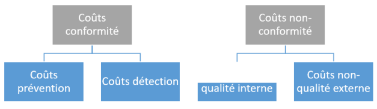
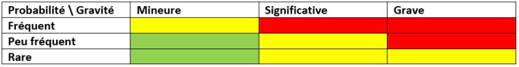

Voir vidéo
Peu importe la méthodologie choisie pour la tenue d'un projet, celui-ci va aborder différents processus répartis sur différentes grandes étapes, qui ne sont pas figées dans le temps ni dans leur ordonnancement. En effet, on peut revenir sur n'importe quelle étape à tout moment de la vie du projet. Lors de son déroulement, un projet traversera les cinq phases suivantes : initialisation, planification, exécution, contrôle et, enfin, une phase de clôture.
Nous décrirons ici en détails les phases d’initialisation et de planification de la vie d'un projet.
Dans cette première phase, on va définir ce qu'est le projet et qui sont les acteurs.
Pour cela, on peut s'appuyer sur deux composantes :
Le registre des parties prenantes : il s'agit d'une liste des parties prenantes du projet. Elle se présente sous la forme d'un registre contenant des informations pour permettre d'identifier et de classifier les acteurs (nom, fonction, rôle dans le projet, influence, légitimité, urgence, attentes envers le projet, implication dans le projet, etc).
Cette liste va servir de base à la bonne prise en compte de tous les acteurs du projet, ainsi qu'à établir la bonne stratégie pour que les parties prenantes clés adhèrent au projet.
Cet exemple illustre la constitution du registre des parties prenantes : on y retrouve, sous la forme d'un tableur, les éléments identifiants un acteur du projet, ainsi que les informations résumant son implication dans le contexte du projet.
Dans cette deuxième étape, il s'agit de décrire ce qu'il va se passer. Elle permet de prévoir les différents aspects de l'exécution du projet afin de répondre à ses objectifs. Il est à noter que toutes les méthodologies de gestion de projet passent par cette étape-là, mais, pour certaines d'entre elles, le degré de détail peut être approfondi progressivement au fur et à mesure de l'avancée du projet.
La phase de planification permet la constitution du plan de gestion du projet, qui est un document de référence servant tout au long du projet. Il va contenir une description de la manière dont sera exécuté le projet sous tous ses aspects.
Ce plan va servir de référence à toute l'équipe projet lors de son exécution. Il va vivre avec celle-ci, puisque l'équipe va y apporter des modifications tout au long du projet.
Le plan de gestion du projet va définir les éléments suivants de manière plus ou moins détaillée :
Prenons par exemple l'arrivée d'un nouveau membre dans l'équipe. Celui-ci se demande comment il doit gérer les risques et quel type de réponse y apporter. Il va donc consulter le plan de gestion de projet.
Dans cette première partie du plan de gestion du projet sera décrite la gestion du périmètre du projet, c'est-à-dire comment seront récupérées et réalisées les spécifications, ainsi que la façon dont seront gérées les demandes de changement au projet.
Les acteurs y sont décrits avec leurs responsabilités.
On va aussi y détailler comment lister les éléments du projet et comment obtenir l'acceptation des livrables.
Cette partie du plan de gestion du projet va décrire comment gérer la planification du projet et de ses tâches, mais aussi le suivi de la performance et le niveau de détail du suivi, c'est-à-dire l'effort à mettre durant le projet pour suivre son avancée.
Par exemple, nous pouvons y définir des KPI sur la progression dans le temps du projet. Dans certaines méthodes de gestion de projet, on peut définir la vélocité sur une période d'exécution courte.
On peut aussi définir un KPI sur la quantité de travail réalisée par rapport à la quantité prévue. L'idée est de comparer le prévu et le réel afin de prendre des mesures en cas de divergence.
Un KPI (pour Key Performance Indicator) est une donnée quantifiable permettant de mesurer la réussite ou l'échec d'un élément. Il s'agit d'un indice de performance par la mesure de variables déterminées.
Dans cette section du plan de gestion du projet seront décrits tous les éléments de gestion des coûts.
On va y préciser les unités de mesure (par exemple, tout en euros), le niveau de précision (on arrondit au centime supérieur ou à l'euro supérieur), le niveau de variation après lequel on doit prendre des mesures correctives (+ 10 % de variation sur les dépenses, par exemple).
Par exemple, cette partie peut décrire qu'on va pointer toutes les dépenses concernant les développeurs sur un numéro de compte X et toutes les dépenses de matériel sur un compte Y, au centime près, en euros. La fréquence de mise à jour devra être d'une fois par mois.
Ici, on va s'assurer que le niveau d'effort donné pour assurer la qualité des livrables est suffisamment élevé pour atteindre les objectifs du projet. Pour ce faire, on va décrire l'attente sur ces efforts.
Généralement, on parle de « coût de la qualité », qui peut être vu comme une sorte de balance entre le surcoût pour s'assurer de répondre à 100 % aux besoins (les coûts de conformité), et le surcoût entraîné par une mauvaise qualité (les coûts de non-conformité).
Les coûts de conformité incluent les coûts de prévention, qui sont constitués des audits et généralement de l'assurance qualité, et les coûts de détection, réalisés durant l'exécution du projet (exemple : les coûts de tests).
Les coûts de non-conformité concernent notamment les coûts de non-qualité interne, qui représentent le temps passé à corriger les défauts des livrables, mais dont la connaissance est limitée à l'équipe projet ou à l'entreprise. À l'inverse, lorsque les livrables sont livrés aux utilisateurs finaux, tous les défauts détectés sont des coûts de non-qualité externes (par exemple, la perte de confiance des clients, la gestion de la garantie, etc.).
La description des modalités de gestion de la qualité se divise en deux parties :
On peut imaginer, dans le monde du développement, que le volet assurance qualité précise qu'une couverture de 40 % des fonctions de l'application en tests unitaires automatisés doit être réalisée.
Le contrôle qualité va décrire que plusieurs audits seront menés sur la façon dont cela est suivi par l'équipe qui exécute le projet.
Si les audits montrent que 40 % n'étaient pas assez, car cela induisait plus de tests manuels sur des parties non-couvertes, l'assurance qualité va proposer un changement au projet avec, par exemple, la définition des fonctions critiques de l'application et l'instauration de tests unitaires automatisés uniquement pour celles-ci, sans tenir compte d'un pourcentage de couverture.
Il est important d'avoir à l'esprit que, plus la non-qualité est détectée tardivement dans le cycle de vie du livrable, plus les coûts associés sont élevés.
Imaginons un projet de fabrication d'une moto.
Les ingénieurs en charge des plans détectent un problème de conception impliquant que la fourche puisse se casser. Ils décident de changer les plans alors que la chaîne de production n'est pas encore modifiée pour ce nouveau modèle de moto. Ils passent à 2 personnes sur 3 jours et le problème est réglé.
Supposons maintenant que ce problème soit remonté alors que cette moto est déjà vendue depuis plusieurs semaines. Il va falloir :
Sans parler de l'image de marque, les coûts s'envolent, mettant en péril le constructeur !
Cette partie du plan de gestion du projet présente comment seront gérées les ressources du projet (humaines et matérielles). Nous allons y décrire l'approche pour acquérir et gérer ces ressources.
Cette composante du plan de gestion du projet décrit les types de communication qui seront réalisés durant la vie du projet, c'est-à-dire le contenu attendu, la forme, la fréquence et les destinataires.
On peut ainsi y trouver les différentes réunions, rapports, appels, courriels, etc.
Sera ici décrit comment gérer les risques et les opportunités du projet.
Cette description comprend la définition de la priorité du risque, généralement via une matrice de classification : Importance = Gravité x Probabilité.
On y définit aussi l'appétence au risque, ainsi que la façon dont seront suivis les risques, par exemple via une matrice des risques. Cette appétence va diriger l'effort dépensé pour gérer les risques.
Cette matrice des risques va permettre de se focaliser sur les risques les plus importants afin d'y apporter des réponses.
Dans cette partie, on va définir la stratégie à aborder pour s'assurer du support des parties prenantes au projet. On va donc remplir le registre des parties prenantes avec des informations issues de cette stratégie.
Cette dernière partie du plan de gestion du projet identifie le besoin des ressources externes et comment y faire appel.